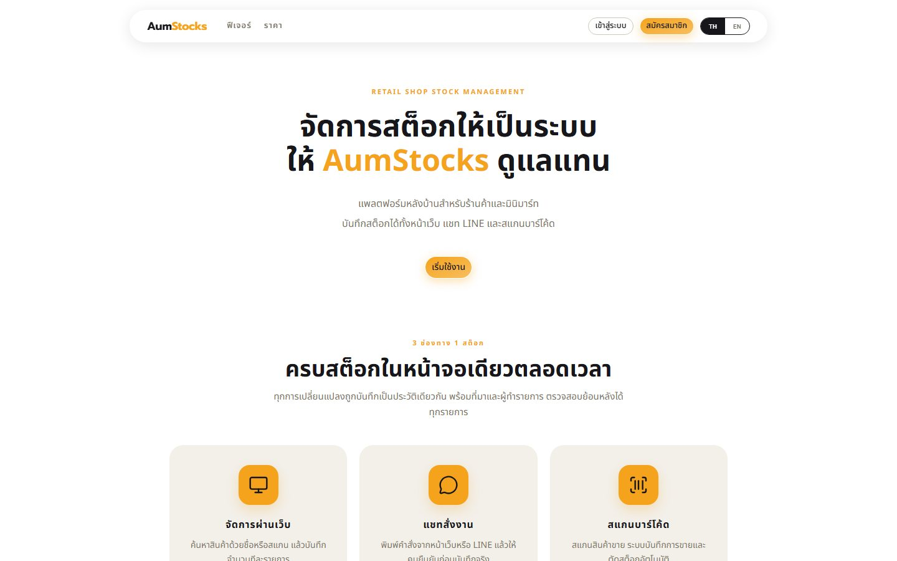

AumStocks
A back-office stock system for retail shops and minimarts, with one central catalogue shared across branches.

Why I built it
TODO: Why did the team build AumStocks? Was it a course project, a real shop, or your own idea? What problem do small shops have with stock?
Who it is for
TODO: Who is it for? A shop owner with several branches and their staff? What changes for them when they use it?
What it does
- A central product catalogue that each shop chooses what to sell from, with stock-in and a full stock history.
- A point-of-sale screen that deducts stock by scanning barcodes.
- Free, Plus and Pro plans paid by card through Stripe.
- Staff accounts with permissions per shop, and an admin area for the whole system.
- A chatbot that adjusts stock from a text message, on the web and in LINE, plus AI suggestions.
My part
- Gathered the requirements and wrote the team guide (AGENTS.md) that every developer and AI agent followed.
- Sign-in and accounts: JWT, 2FA on every sign-in method, email verification, forgotten and reset passwords, Google and LINE login and account linking, changing email.
- Payments: Stripe card payments inside the site, prorated upgrades, cancelling pending payments and payment history.
- The admin area: managing users and shops, creating admin accounts and an audit log.
- Team foundations: CI, the shadcn theme, the auth and payments database schema, and the switch to Brevo for email.
Challenges and decisions
The server could not send email
The API host blocks outgoing SMTP, so verification and reset emails never left the server. I replaced SMTP with Brevo's HTTP API, which goes out over normal web traffic.
Removed staff could keep working
A JWT is only signed data, so a deleted staff member could keep using the system until their token expired. Now every request checks the account in the database, access tokens last 15 minutes, and sessions continue through refresh tokens.
What I learned
TODO: What did you learn from this project, or what would you do differently next time?
Built with
- Frontend
- Next.js 16 (App Router), React 19, TypeScript, Tailwind CSS 4, shadcn/ui, TanStack Query, react-hook-form + zod
- Backend
- NestJS 11, Prisma 7, Socket.io, scheduled jobs
- Database
- PostgreSQL
- Auth
- JWT access and refresh tokens, bcrypt, TOTP 2FA, Google and LINE login
- Services
- Stripe, LINE Messaging API, Claude API, Cloudinary, Brevo, OpenStreetMap
- Hosting
- Vercel (web)